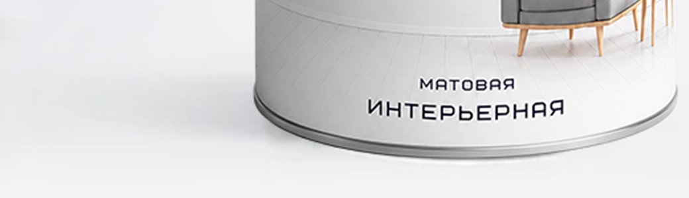
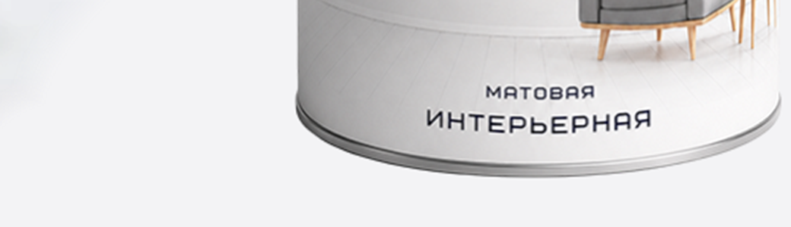
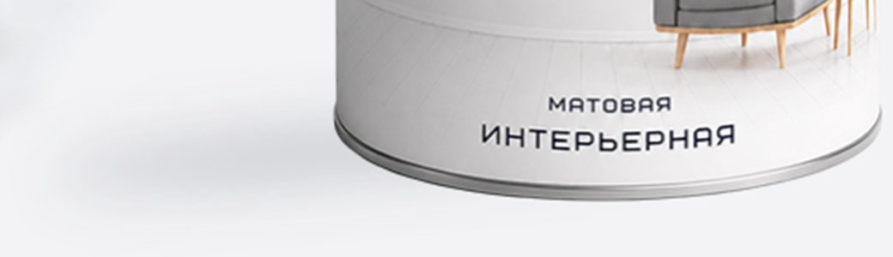
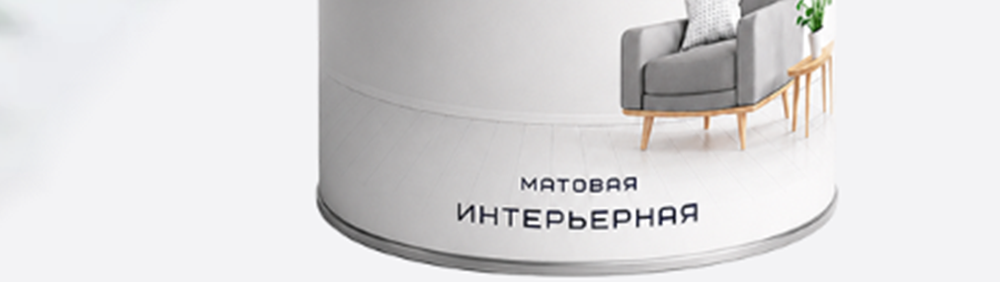
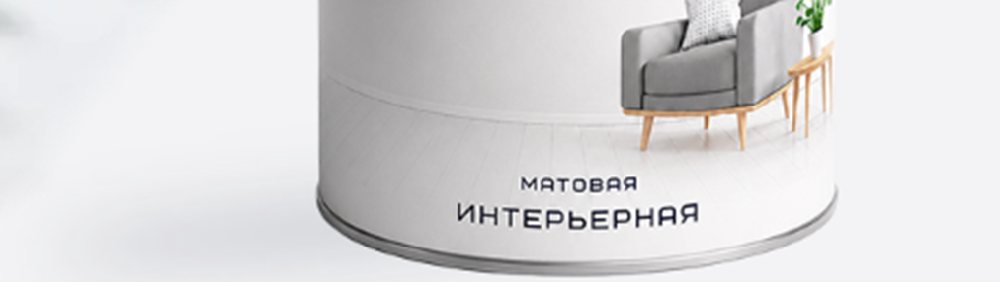

Скриншоты headless Chrome. «Было» — прод до правки, «Стало» — после. Кадры вырезаны у основания банки (пол — самое заметное место).
Макет 2560×1440, основание банки. Под банкой мягкая тень, уходящая влево по полу — свет падает справа.

Фото героя новое, пол под банкой чистый — банка «висела». Вернул такую же плоскую тень, как под банкой на главной странице.


Тот же кадр на ноутбучной ширине: тень масштабируется вместе с банкой, кант у пола без шва.


Тот же приём уже стоит на главной (коммит 736d36f). На карточке тени в коде раньше не было — теперь геометрия и плотность совпадают.
| Проверка | Результат |
|---|---|
| Позиция и размер банки на 1920 / 2560 / 768 / 390 | не изменились (совпадает с продом до правки) |
| Горизонтальная прокрутка 2550 / 2559 / 2560 | 0 px |
| Пиксельное сравнение с прод-сборкой | отличия только у основания банки |
| Прод после сборки | кадры совпадают с локальными побайтно |
Тень — псевдоэлемент .p-hero__can::after в css/product.css; на телефонах размытие уменьшено (12 px до 1024, 9 px до 768), чтобы пятно не расползалось на маленькой банке.